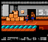
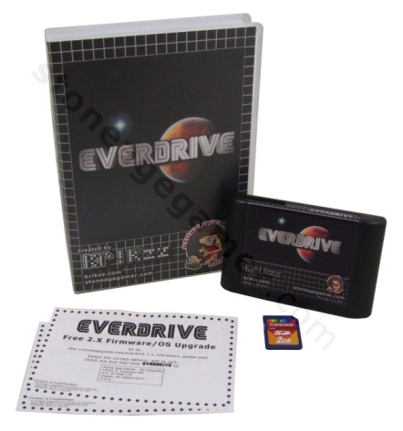
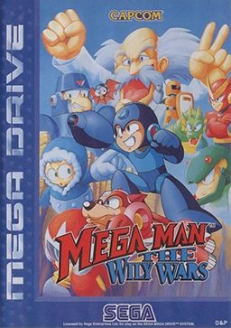
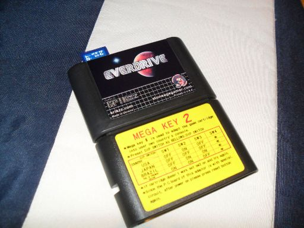
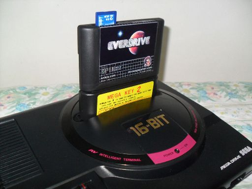
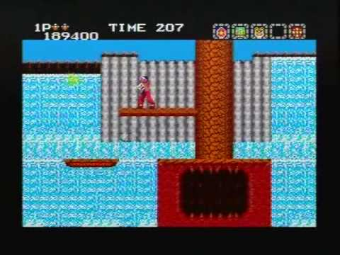
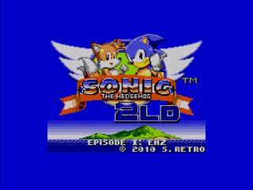

Mega Drive - Everdrive, flash-cart para Mega Drive/Genesis
:::. Por Ninja - Saudações, terráqueos! Após ter sido equivocadamente enviado para a Austrália (!!!) e ter ficado de castigo e ajoelhado no milho nos calabouços entrevados da Receita Federal brasuca por semanas a fio, eis que o flash cart ucraniano mais comentado pela comunidade retrogamer da internet, enfim, chega ao seu destino: o meu Mega Drive!
_______________________________________________________________________________
Se o simples fato do Everdrive ter finalmente saído da Oceania e ter vindo de bumerangue direto pra Pindorama já foi uma notícia e tanto, imaginem a circunferência do meu sorriso ao saber que o brinquedo não fora taxado pelo imperador César Augusto de Roma. Logo, sem taxa, sem pagamentos de tributos.

Da mesma forma que o PowerPak do Brian Parker é um milagre da engenharia alienígena, o Everdrive do Igor Golubovski é também a maior maravilha tecnológica depois da criação do cinema na França no século XVIII. Ao invés dos "primitivos", raros e pouco usuais cartões Compact Flash (CF) usados nos PowerPak, usa-se os diminutos SD Cards (Secure Digital Card) no Everdrive. Se o primeiro é tão rápido em acesso quanto uma partida de Whip Rush , o cartãozinho compatível com o flash cart do Mega Drive é tão farto quanto amendoim em botequim. Resumo da ópera: de tão comum, acha-se cartões SDs em farmácias, lotéricas e em sacolões hortifruti .
.
Pra começar a brincar não há receita de bolo: dribla-se a ansiedade preliminar, baixa-se as roms ao gosto do freguês e voialá. Sem segredos, sem burocracia e claro, sem bico de coturno militar na bolsa escrotal! Os jogos PAL/SECAM funcionam (uma vez que se tem a rom modificada escondida na manga do fraque). Eu escutei suspiros em regozijo e o nome Mega Man: The Wily Wars ecoando? Apostem seus mindinhos que sim!

O Everdrive possui uma bios super bacana e bastante intuitiva que deixa a dos PowerPak comendo a poeira do carango do Snake Sanders. Pode parecer tolo e fruto de uma mente devorada pelo transtorno obsessivo compulsivo, mas deixar as roms listadas em ordem alfabética é uma de minhas versões do Jardim do Éden. Com o cartucho Everdrive mantem-se a tabulação correta e, como se não bastasse, ao lado do nome do jogo, há o tamanho do mesmo em bytes.
É legal comentar: o cartucho EVERDRIVE - apesar do "sobrenome" nipônico - não é compatível com o Mega Drive. Strange, but real (by Rod Serling). O flash cart da Europa oriental deveria se chamar EVERSEGAGENESIS, uma vez que o mesmo só se torna funcional com os primos amarelos e europeus se estes possuem algum mod de frequência e ou destravamentos mecânicos e regionais.
Para ser possível que a jogatina flua em toda a sua plenitude e com todos os jogos do maior dispositivo de entretenimento eletrônico de todo o Cosmo, usei um outro aparato deliciosamente bucaneiro; o inefável, imorrível e lendário: MEGA KEY 2! Aplausos!

O Everdrive é compatível com roms de Master System e com roms de 32X (o mesmo é estritamente necessário para tal). Há ainda gente trabalhando duro como escravos judeus nas minas de cobalto do Faraó para que games de Game Gear sejam também suportados num futuro próximo.
De Mega Drive/Sega Genesis, eu testei muita coisa. De Aladdin 2 a Squirrel King (cartuchos chineses notadamente piratas) e todas as roms me pareceram absolutamente funcionais.

A minha versão é a EverDrive Deluxe. Essa aí de cima. Cartucho adesivado em alta qualidade, cartão SD de 2 GB, box universal e papelada de atualização de firmware. Lindo de morrer. A versão 20 do OS UPDATATE já está disponível para download no site do Krizz, o distribuidor do Everdrive.
Master System: Ninja Gaiden, Captain Silver, Buggy Run, Aztec Adventure (AKA Nazca 88'), funcionam perfeitamente. 100% dos games testados funcionam como se estivesse inserido no sistema um cartucho autêntico. Não há traços de emulação, slowdown ou qualquer problema envolvendo o framerate de quaisquer jogos. Ah, sem contar com games de SEGA MARK III, tais como o delicioso - embora pouco conhecido, Argos no Juujiken (AKA Rygar)!

Sonic 2 LD Episode 01, um port/hack do Sonic The Hedgehog 2 do Sega Genesis para o Master System miraculosamente FUNCIONA! O LD (que é a inicial de Low Definition) do nome do game é uma alusão a um tal Sonic The Hedgehog 2 HD que jamais deu as caras no mundo da emulação. É fundamental salientar: o jogo tem os gráficos muito bem acabados. A jogabilidade possui o decoro que foi esquecido nas últimas décadas de vida do Master System, quando produtoras como a Tekmagic, Probe e Domark quase mandam pelo ralo - com a ajuda de um rodo - a bela reputação dos primeiros games japoneses do console. A trilha - apesar de bem acabada - está aquém do que foi mostrado no trailer que pipoca pelo youtube afora. Senti falta do Spin Dash, a marca registrada do ouriço azul e também dos loopings. Mas vá lá. Mal posso esperar para poder jogar com A Tails - pra mim aquilo é uma raposinha, não adianta - , uma vez que essa é uma versão beta disponibiizada pelo Doc Eggfan, o dono do projeto. Estamos todos esperançosos!

Fim. Ninja!
Acesse o Trombone e comente sobre essa matéria!